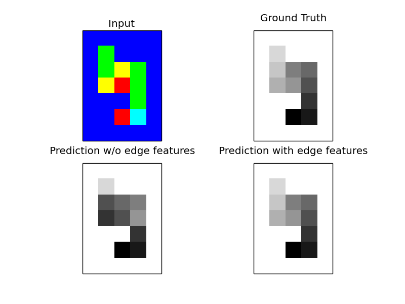

This example uses the snake dataset introduced in Nowozin, Rother, Bagon, Sharp, Yao, Kohli: Decision Tree Fields ICCV 2011
This dataset is specifically designed to require the pairwise interaction terms to be conditioned on the input, in other words to use non-trival edge-features.
The task is as following: a “snake” of length ten wandered over a grid. For each cell, it had the option to go up, down, left or right (unless it came from there). The input consists of these decisions, while the desired output is an annotation of the snake from 0 (head) to 9 (tail). See the plots for an example.
As input features we use a 3x3 window around each pixel (and pad with background where necessary). We code the five different input colors (for up, down, left, right, background) using a one-hot encoding. This is a rather naive approach, not using any information about the dataset (other than that it is a 2d grid).
The task can not be solved using the simple DirectionalGridCRF - which can only infer head and tail (which are also possible to infer just from the unary features). If we add edge-features that contain the features of the nodes that are connected by the edge, the CRF can solve the task.
From an inference point of view, this task is very hard. QPBO move-making is not able to solve it alone, so we use the relaxed AD3 inference for learning.
PS: This example runs a bit (5 minutes on 12 cores, 20 minutes on one core for me). But it does work as well as Decision Tree Fields ;)
Script output:
Please be patient. Will take 5-20 minutes.
Results using only directional features for edges
Test accuracy: 0.829
[[2750 0 0 0 0 0 0 0 0 0 0]
[ 0 98 0 0 1 0 0 0 1 0 0]
[ 0 6 38 3 34 8 1 2 5 1 2]
[ 0 9 8 10 8 41 1 12 3 7 1]
[ 0 1 14 2 37 8 1 9 21 5 2]
[ 0 4 2 9 16 29 2 19 11 7 1]
[ 0 2 13 3 30 16 2 7 20 5 2]
[ 0 7 5 8 15 29 3 14 8 11 0]
[ 0 3 10 3 29 10 1 6 20 3 15]
[ 0 9 3 2 10 8 0 15 4 46 3]
[ 0 2 7 3 9 1 1 3 7 3 64]]
Results using also input features for edges
Test accuracy: 0.997
[[2749 0 0 0 0 0 0 0 1 0 0]
[ 0 100 0 0 0 0 0 0 0 0 0]
[ 0 0 100 0 0 0 0 0 0 0 0]
[ 0 0 0 99 0 1 0 0 0 0 0]
[ 0 0 0 0 97 0 3 0 0 0 0]
[ 0 0 0 1 0 97 0 2 0 0 0]
[ 0 0 0 0 1 0 98 0 1 0 0]
[ 0 0 0 0 0 1 0 99 0 0 0]
[ 0 0 0 0 0 0 0 0 100 0 0]
[ 0 0 0 0 0 0 0 1 0 99 0]
[ 0 0 0 0 0 0 0 0 0 0 100]]
Python source code: plot_snakes.py
import numpy as np
import matplotlib.pyplot as plt
from sklearn.preprocessing import label_binarize
from sklearn.metrics import confusion_matrix, accuracy_score
from pystruct.learners import OneSlackSSVM
from pystruct.datasets import load_snakes
from pystruct.utils import make_grid_edges, edge_list_to_features
from pystruct.models import EdgeFeatureGraphCRF
from pystruct.inference import get_installed
def one_hot_colors(x):
x = x / 255
flat = np.dot(x.reshape(-1, 3), 2 ** np.arange(3))
one_hot = label_binarize(flat, classes=[1, 2, 3, 4, 6])
return one_hot.reshape(x.shape[0], x.shape[1], 5)
def neighborhood_feature(x):
"""Add a 3x3 neighborhood around each pixel as a feature."""
# we could also use a four neighborhood, that would work even better
# but one might argue then we are using domain knowledge ;)
features = np.zeros((x.shape[0], x.shape[1], 5, 9))
# position 3 is background.
features[:, :, 3, :] = 1
features[1:, 1:, :, 0] = x[:-1, :-1, :]
features[:, 1:, :, 1] = x[:, :-1, :]
features[:-1, 1:, :, 2] = x[1:, :-1, :]
features[1:, :, :, 3] = x[:-1, :, :]
features[:-1, :-1, :, 4] = x[1:, 1:, :]
features[:-1, :, :, 5] = x[1:, :, :]
features[1:, :-1, :, 6] = x[:-1, 1:, :]
features[:, :-1, :, 7] = x[:, 1:, :]
features[:, :, :, 8] = x[:, :, :]
return features.reshape(x.shape[0] * x.shape[1], -1)
def prepare_data(X):
X_directions = []
X_edge_features = []
for x in X:
# get edges in grid
right, down = make_grid_edges(x, return_lists=True)
edges = np.vstack([right, down])
# use 3x3 patch around each point
features = neighborhood_feature(x)
# simple edge feature that encodes just if an edge is horizontal or
# vertical
edge_features_directions = edge_list_to_features([right, down])
# edge feature that contains features from the nodes that the edge connects
edge_features = np.zeros((edges.shape[0], features.shape[1], 4))
edge_features[:len(right), :, 0] = features[right[:, 0]]
edge_features[:len(right), :, 1] = features[right[:, 1]]
edge_features[len(right):, :, 0] = features[down[:, 0]]
edge_features[len(right):, :, 1] = features[down[:, 1]]
edge_features = edge_features.reshape(edges.shape[0], -1)
X_directions.append((features, edges, edge_features_directions))
X_edge_features.append((features, edges, edge_features))
return X_directions, X_edge_features
print("Please be patient. Will take 5-20 minutes.")
snakes = load_snakes()
X_train, Y_train = snakes['X_train'], snakes['Y_train']
X_train = [one_hot_colors(x) for x in X_train]
Y_train_flat = [y_.ravel() for y_ in Y_train]
X_train_directions, X_train_edge_features = prepare_data(X_train)
if 'ogm' in get_installed():
inference = ('ogm', {'alg': 'fm'})
else:
inference = 'qpbo'
# first, train on X with directions only:
crf = EdgeFeatureGraphCRF(inference_method=inference)
ssvm = OneSlackSSVM(crf, inference_cache=50, C=.1, tol=.1, max_iter=100,
n_jobs=1)
ssvm.fit(X_train_directions, Y_train_flat)
# Evaluate using confusion matrix.
# Clearly the middel of the snake is the hardest part.
X_test, Y_test = snakes['X_test'], snakes['Y_test']
X_test = [one_hot_colors(x) for x in X_test]
Y_test_flat = [y_.ravel() for y_ in Y_test]
X_test_directions, X_test_edge_features = prepare_data(X_test)
Y_pred = ssvm.predict(X_test_directions)
print("Results using only directional features for edges")
print("Test accuracy: %.3f"
% accuracy_score(np.hstack(Y_test_flat), np.hstack(Y_pred)))
print(confusion_matrix(np.hstack(Y_test_flat), np.hstack(Y_pred)))
# now, use more informative edge features:
crf = EdgeFeatureGraphCRF(inference_method=inference)
ssvm = OneSlackSSVM(crf, inference_cache=50, C=.1, tol=.1, switch_to='ad3',
n_jobs=1)
ssvm.fit(X_train_edge_features, Y_train_flat)
Y_pred2 = ssvm.predict(X_test_edge_features)
print("Results using also input features for edges")
print("Test accuracy: %.3f"
% accuracy_score(np.hstack(Y_test_flat), np.hstack(Y_pred2)))
print(confusion_matrix(np.hstack(Y_test_flat), np.hstack(Y_pred2)))
# plot stuff
fig, axes = plt.subplots(2, 2)
axes[0, 0].imshow(snakes['X_test'][0], interpolation='nearest')
axes[0, 0].set_title('Input')
y = Y_test[0].astype(np.int)
bg = 2 * (y != 0) # enhance contrast
axes[0, 1].matshow(y + bg, cmap=plt.cm.Greys)
axes[0, 1].set_title("Ground Truth")
axes[1, 0].matshow(Y_pred[0].reshape(y.shape) + bg, cmap=plt.cm.Greys)
axes[1, 0].set_title("Prediction w/o edge features")
axes[1, 1].matshow(Y_pred2[0].reshape(y.shape) + bg, cmap=plt.cm.Greys)
axes[1, 1].set_title("Prediction with edge features")
for a in axes.ravel():
a.set_xticks(())
a.set_yticks(())
plt.show()
Total running time of the example: 1150.59 seconds